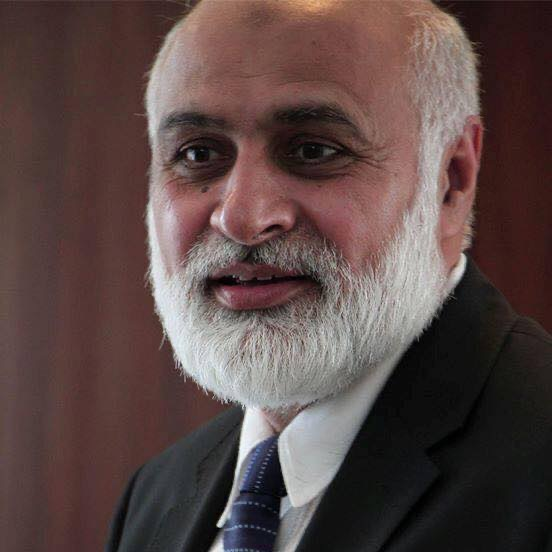

Niaz Ahmad Akhtar (Urdu: نیاز احمد اختر ; born 15 June 1962) is a
Pakistani academic who is currently serving as the vice-chancellor of
Quaid-i-Azam University, in office since 14 March 2023. He is also the
vice-chairman of the Pakistan Engineering Council from Punjab.His other
roles have included being the professor emeritus at the University of the
Punjab, where he also served as a vice-chancellor, the vice-chancellor of
the University of the Punjab, the vice-chancellor of the University of
Sahiwal rector of the National Textile University, Faisalabad
vice-chancellor of the University of Engineering and Technology, Taxila
and the vice-chancellor of the Information Technology University,
Lahore.He is also the founding director of the Institute of Quality and
Technology Management and the Quality Enhancement Cell at the University
of the Punjab, Lahore.In recognition of his outstanding performance in the
field of Education (Engineering & Technology), he was awarded
Sitara-i-Imtiaz by the Government of Pakistan in 2015.
